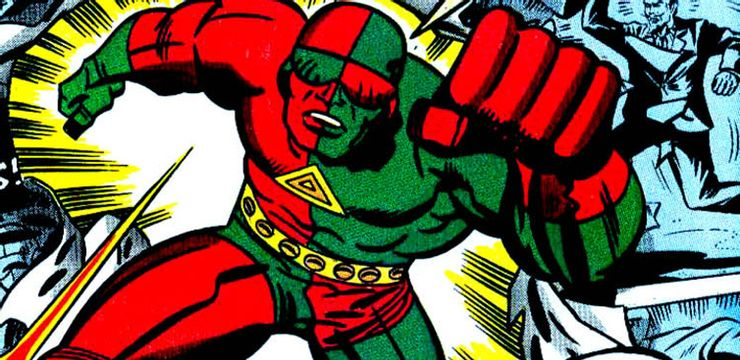

3D-Man possesses the powers of flight, superhuman strength, x-ray vision, heat vision, cold breath, super-speed, enhanced hearing, and nigh-invulnerability. While Superman is immensely strong both in terms of muscle power and ability to take physical punishment, he is not all-powerful. Superman's only other known weakness is magic, which can injure him as easily as it can any other being. Magical beings are able to injure the man of steel easily. However, at one time Superman said that he hasn't shown his full power because "he feels like like he lives in a world full of cardboard" and the risk he could kill someone in the Justice League Unlimited finale, "Destroyer".
